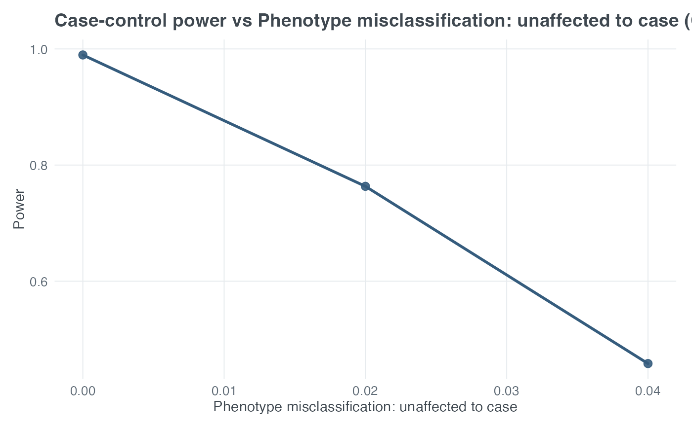

Sweeps one x-axis parameter and repeatedly calls
cc_power() to plot case-control power.
The wrapper supports both input_mode = "model_based" and
input_mode = "model_free".
Arguments
- x_var
Character. Parameter to vary on the x-axis.
- x_values
Numeric vector of x-axis values.
- test
One of
"genotypes"or"trend".- input_mode
One of
"model_based"or"model_free".- compare_tests
Logical. If TRUE, plot genotype and trend tests together and ignore
test.- title
Optional character title override.
- x_label
Optional x-axis label override.
- y_label
Optional y-axis label override.
- return_data
Logical. If TRUE, return the data frame instead of a ggplot.
- ...
Arguments passed to
cc_power().
Details
Supported x_var values include fixed sample-size variables
"N_case", "N_ctrl", and "N_total"; model and design
variables "alpha", "prev", "pd", "R2", and
"k"; locus-heterogeneity variables "pi" and
"locus_het_rate"; phenotype-misclassification variables
"theta", "phi", and "pheno_error_multiplier"; and
genotype-misclassification variables "e", "e1", "e2",
"e01", "e02", "e03", case/control differential
three-parameter error rates, "geno_error_multiplier", and
"diff_multiplier".
When x_var = "pheno_error_multiplier", baseline phenotype-error
values are read from theta_base and phi_base, falling back to
theta and phi if the baseline arguments are not supplied. When
x_var = "geno_error_multiplier", baseline genotype-error values are
read from e_base; e1_base and e2_base; e01_base,
e02_base, and e03_base; or case/control baseline parameters
for geno_misclass = "diff3p".
All arguments supplied through ... remain fixed while
x_var is swept. The x-axis contains x_values; the y-axis is
the power returned by cc_power() for the selected genotype chi-square
or trend test. With compare_tests = TRUE, both powers are drawn on
the same axes.
When sweeping x_var = "pi", set locus_het = TRUE. The exact
pi = 0 null boundary is retained in returned and plotted data with
zero NCP and power equal to alpha.
Examples
g_aff <- c((1 - 0.05)^2, 2 * 0.05 * (1 - 0.05), 0.05^2)
g_unaff <- c((1 - 0.15)^2, 2 * 0.15 * (1 - 0.15), 0.15^2)
plot_cc_power(
x_var = "phi",
x_values = c(0, 0.02, 0.04),
test = "genotypes",
input_mode = "model_free",
N_case = 250,
alpha = 0.01,
g1 = g_aff,
g0 = g_unaff,
prev = 0.05,
pheno_misclass = TRUE,
theta = 0,
k = 1
)
